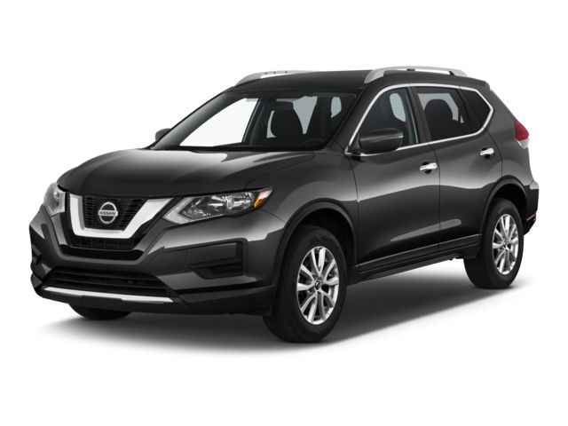

Kia Rio 2020
El Kia Rio 2020 es un sedán compacto ideal para quienes buscan economía, practicidad y estilo urbano. Viene con un motor 1.6 L de 120 hp y transmisión CVT, ofreciendo un excelente rendimiento de combustible de hasta 33 mpg en ciudad y 41 mpg en carretera.
Su diseño es moderno y su interior sorprende por ser cómodo y funcional, con pantalla táctil de 7”, Apple CarPlay y Android Auto, y controles al volante. A pesar de su tamaño, ofrece buen espacio para cinco pasajeros y una conducción ágil perfecta para el día a día.
Una opción inteligente para moverse con estilo, sin gastar de más.

NISSAN ROUGUE 2020 4X2
La Nissan Rogue 2020 4x2 es una SUV ideal para la familia, gracias a su espacio interior amplio, manejo suave y excelente rendimiento de combustible (hasta 29 mpg). Su motor 2.5 L de 170 hp y la transmisión CVT aseguran una conducción cómoda en ciudad y carretera.
Destaca por su tecnología de seguridad de serie, incluyendo frenado automático, alerta de punto ciego y control de carril. Además, ofrece conectividad moderna con Apple CarPlay y Android Auto, y una capacidad de carga versátil de hasta 70 ft³.
Una opción confiable, económica y bien equipada para quienes no necesitan tracción 4x4..
